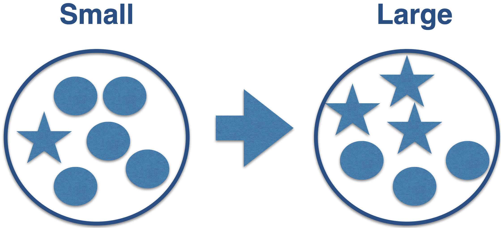
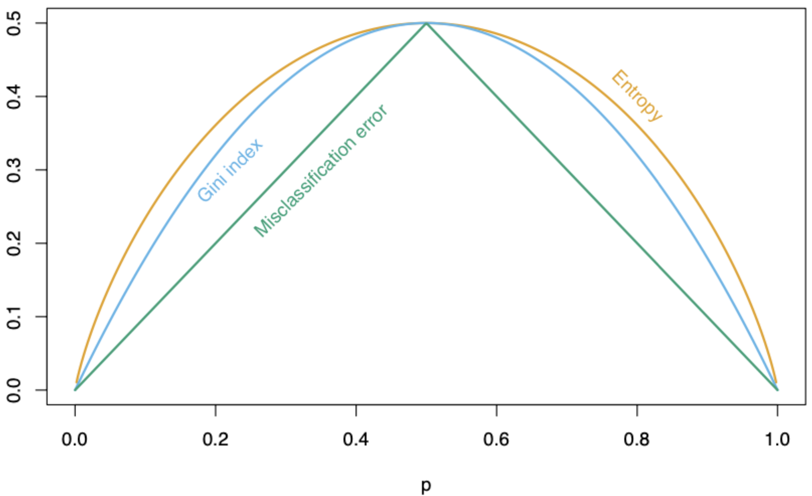
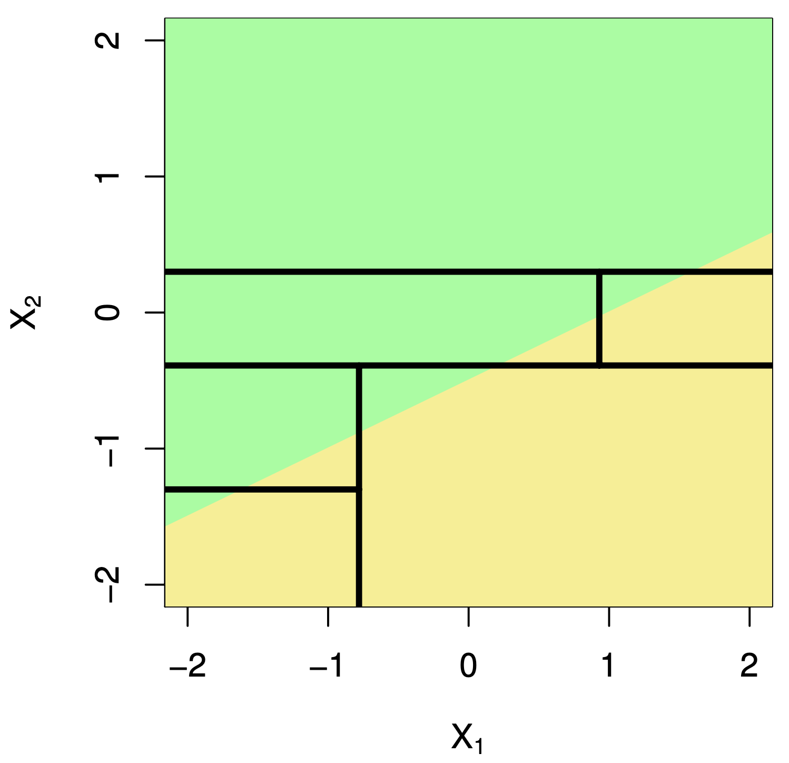

Before we start, let’s import the data science libraries into Python.
# Importing necessary librariesimport pandas as pdimport matplotlib.pyplot as pltimport seaborn as snsimport statsmodels.api as smfrom sklearn.model_selection import train_test_splitfrom sklearn.metrics import confusion_matrix, ConfusionMatrixDisplay, accuracy_score
Here, we will introduce the functions confusion_matrix(), ConfusionMatrixDisplay() and accuracy_score() to evaluate the performance of a logistic regression classifier.
Main Data Science Problems
Regression Problems. The response is numerical. For example, a person’s income, the value of a house, or a patient’s blood pressure.
Classification Problems. The response is categorical and involves K different categories. For example, the brand of a product purchased (A, B, C) or whether a person defaults on a debt (yes or no).
Predictors can be numerical or categorical.
Response:
\(Y\) is a categorical variable that takes 2 categories or classes.
For example, \(Y\) can take 0 or 1, A or B, no or yes, spam or no spam.
When classes are strings, they are usually encoded as 0 and 1.
The target class is the one for which \(Y = 1\). The reference class is the one for which \(Y = 0\).
Classification Algorithms
Classification algorithms use predictor values to predict the class of the response (target or reference).
That is, for an unseen record, they use predictor values to predict whether the record belongs to the target class or not.
Technically, they predict the probability that the record belongs to the target class.
Example 1
Consider a spam filter where \(Y\) is the email type.
The target class is spam. In this case, \(Y=1\).
The reference class is not spam. In this case, \(Y=0\).
Both emails would be classified as spam. However, we would have greater confidence in our classification for the second email.
Classification and Regression Trees (CART)
Decision Tree
It is a supervised learning algorithm that predicts or classifies observations using a hierarchical tree structure.
Simple and useful for interpretation.
Can handle numerical and categorical predictors and responses.
Computationally efficient.
Nonparametric technique.
Example 2: Identifying Counterfeit Banknotes
Dataset
The data is located in the file “banknotes.xlsx”.
bank_data = pd.read_excel("banknotes.xlsx")# Set response variable as categorical.bank_data['Status'] = pd.Categorical(bank_data['Status'])bank_data.head()
Status
Left
Right
Bottom
Top
0
genuine
131.0
131.1
9.0
9.7
1
genuine
129.7
129.7
8.1
9.5
2
genuine
129.7
129.7
8.7
9.6
3
genuine
129.7
129.6
7.5
10.4
4
genuine
129.6
129.7
10.4
7.7
Generating Training Data
We split the current dataset into two datasets: training and validation. To do this, we use the scikit-learn train_test_split() function.
# Set full matrix of predictors.X_full = bank_data.drop(columns = ['Status'])# Set full matrix of responses.Y_full = bank_data['Status']# Split the dataset.X_train, X_val, Y_train, Y_val = train_test_split(X_full, Y_full, test_size=0.3)
The test_size parameter sets the portion of the dataset that will go into the validation set.
The function intelligently partitions the data using the empirical distribution of the response.
Technically, it splits the data so that the response distribution in the training and validation sets is similar.
Typically, the proportion of the data set allocated to the test set is 20% or 30%.
Later, we will use the validation data set to evaluate the classification performance of the estimated logistic regression model for classifying unobserved data.
Basic idea of a decision tree
Stratify or segment the prediction space into several simpler regions.
How do you build a decision tree?
Building decision trees involves two main procedures.
Grow a large tree.
Pruning the tree to prevent overfitting.
After building a “good” tree, we can predict new observations that are not in the data set we used to build it.
How do we grow a tree?
Using the CART algorithm!
The algorithm uses a recursive binary splitting strategy that builds the tree using a greedy top-down approach.
Basically, at a given node, it considers all variables and all possible splits of that variable. Then, for classification, it chooses the best variable and splits it that minimizes the so-called impurity.
We repeat the partitioning process until the terminal nodes have no less than 5 observations.
What is impurity?
Node impurity refers to the homogeneity of the response classes at that node.
The CART algorithm minimizes impurity between tree nodes.
¿Cómo medimos la impureza?
There are three different metrics for impurity:
Risk of misclassification.
Cross entropy.
Gini impurity index.
  Proportion of elements in a class
Pruning the Tree
To avoid overfitting, we pruned some of the tree’s branches. More specifically, we collapsed two internal (non-terminal) nodes.
To prune a tree, we use an advanced algorithm to measure the contribution of the tree’s branches.
The algorithm has a tuning parameter called \(\alpha\), which places greater weight on the number of tree nodes (or size):
Large values of \(\alpha\) result in small trees with few nodes.
Small values of \(\alpha\) result in large trees with many nodes.
Implementation Details
Categorical predictors with unordered levels \(\{A, B, C\}\). We order the levels in a specific way (works for binary and regression problems).
Predictors with missing values. For quantitative predictors, we use multiple imputation. For categorical predictors, we create a new “NA” level.
Tertiary or quartary splits. There is not much improvement.
Diagonal splits (using a linear combination for partitioning). These can lead to improvement, but they impair interpretability.
Python Example
The “AdultReduced.jmp” data comes from the UCI Machine Learning Repository and is derived from US Census records.
In this data, the goal is to predict whether a person’s income was high (defined in 1994 as more than $50,000) or low.
Predictors include education level, job type (e.g., never worked and local government), capital gains/losses, hours worked per week, country of origin, etc.
The data contains 7,508 records.
Disadvantage of Decision Trees
Decision trees have high variance. A small change in the training data can result in a very different tree.
It has trouble identifying simple data structures.

Classification Algorithm Metrics
Evaluation
We evaluate a logistic regression classifier by classifying observations that were not used for training or estimation.
That is, we use the classifier to predict categories in the test data set using only the predictor values from this set.
In Python, we use the commands:
# Remove problematic predictor from the test set.#X_val = X_val.drop(columns = ['Right'])# Add constant to the predictor matrix from the test set.#X_val = sm.add_constant(X_val)# Predict probabilities.#predicted_probability = logit_model.predict(X_val)
The predict() function generates probabilities instead of the actual classes.
#predicted_probability.head()
These are the probabilities that a bill is “counterfeit” based on its characteristics (predictor values).
To convert the probabilities into real-world classes, we round them:
Observations with probabilities greater than 0.5 are classified as “false.”
Observations with probabilities less than 0.5 are classified as “genuine.”
Now, we compare the predictions with the actual categories in the validation dataset. A good logistic regression model shows good agreement between its predictions and the actual categories.
Confusion Matrix
Table used to evaluate the performance of a classifier.
Compares actual values with the predicted values of a classifier.
Useful for binary and multiclass classification problems.
In Python
We calculate the confusion matrix using the homonymous function scikit-learn.
# Create dummy variables for test set.#Y_dummies = pd.get_dummies(Y_val, dtype = 'int')# Select target variable from test set.#Y_target_test = Y_dummies['counterfeit']# Compute confusion matrix.#cm = confusion_matrix(Y_target_test, predicted_classes)# Show confusion matrix.#print(cm)
We can display the confusion matrix using the ConfusionMatrixDisplay() function.
#ConfusionMatrixDisplay(cm).plot()
Accuracy
A simple metric for summarizing the information in the confusion matrix is accuracy. It is the proportion of correct classifications for both classes, out of the total classifications performed.
In Python, we calculate accuracy using the scikit-learnaccuracy_score() function.
The higher the accuracy, the better the performance of the classifier.
Observaciones
Accuracy is easy to calculate and interpret.
It works well when the data set has a balanced class distribution (i.e., cases 1 and 0 are approximately equal).
However, there are situations in which identifying the target class is more important than the reference class.
For example, it is not ideal for unbalanced data sets. When one class is much more frequent than the other, accuracy can be misleading.
An example
Let’s say we want to create a classifier that tells us whether a mobile phone company’s customer will churn next month.
Customers who churn significantly decrease the company’s revenue. That’s why it’s important to retain these customers.
To retain that customer, the company will send them a text message with an offer for a low-cost mobile plan.
Ideally, our classifier correctly identifies customers who will churn, so they get the offer and, hopefully, stay.
In other words, we want to avoid making wrong decisions about customers who will churn.
Wrong decisions about loyal customers aren’t as relevant.
Because if we classify a loyal customer as one who will churn, the customer will get a good deal. They’ll probably pay less but stay anyway.
Another example
Another example is developing an algorithm (classifier) that can quickly identify patients who may have a rare disease and need a more extensive and expensive medical evaluation.
The classifier must make correct decisions about patients with the rare disease, so they can be evaluated and eventually treated.
A healthy patient who is misclassified with the disease will only incur a few extra dollars to pay for the next test, only to discover that the patient does not have the disease.
Classification-Specific Metrics
To overcome this limitation of accuracy and error rate, there are several class-specific metrics. The most popular are:
Sensitivity or recall
Precision
Type I error
These metrics are calculated from the confusion matrix.
Sensitivity or recall = OO/(OO + OR) “How many records of the target class did we predict correctly?”
Precision = OO/(OO + RO) How many of the records we predicted as target class were classified correctly?
Type I error = RO/(RO + RR) “How many of the reference records did we incorrectly predict as targets?”
Discussion
There is generally a trade-off between sensitivity and Type I error.
Intuitively, increasing the sensitivity of a classifier is likely to increase Type I error, because more observations are predicted as positive.
Possible trade-offs between sensitivity and Type I error may be appropriate when there are different penalties or costs associated with each type of error.
Example
Assuming the target class is “large”
Sensitivity = 566/(566 + 214) = 0.726
Accuracy = 566/(566 + 156) = 0.783
Type 1 Error = 156/(156 + 655) = 0.192
Activity 2.1: Classification and Metrics (cooperative mode)
Pair with a partner.
Using the data in the “weight-height.csv” table, apply the CART procedure to build a decision tree useful for predicting a person’s sex based on their weight and height.
In this example, the predictor variables are continuous, and the predictor variable is binary.
Interpret the Precision, Accuracy, Sensitivity, and Type 1 Error values for the validation set. If the software doesn’t report them, perform the calculations using the confusion matrix. Use “Female” as the target class.
Discuss the effectiveness of the resulting model.
K nearest neighbors
This is a supervised learning algorithm that uses proximity to make classifications or predictions about the clustering of a single data point.
Basic idea: Predict a new observation using the K closest observations in the training dataset.
To predict the response for a new observation, K-NN uses the K nearest neighbors (observations) in terms of the predictors!
The predicted response for the new observation is the most common response among the K nearest neighbors.
The algorithm has 3 steps:
Choose the number of nearest neighbors (K).
For a new observation, find the K closest observations in the training data (ignoring the response).
For the new observation, the algorithm predicts the value of the most common response among the K nearest observations.
Suppose we have two groups: the red group and the green group. The number line shows the value of a variable for our training data.
A new observation arrives, and we don’t know which group it belongs to.
If we had chosen \(K=3\), then the three nearest neighbors would vote on which group the new observation belongs to.
Using \(K = 3\), that’s 2 votes for “genuine” and 2 for “fake.” So we classify it as “genius.”
Closeness is based on Euclidean distance.
Implementation Details
Ties
If there are more than K nearest neighbors, include them all.
If there is a tie in the vote, set a rule to break the tie. For example, randomly select the class.
KNN uses the Euclidean distance between points. So it ignores units.
Example: two predictors: height in cm and arm span in feet. Compare two people: (152.4, 1.52) and (182.88, 1.85).
These people are separated by 30.48 units of distance in the first variable, but only by 0.33 units in the second.
Therefore, the first predictor plays a much more important role in classification and can bias the results to the point where the second variable becomes useless.
As a first step, we must transform the predictors so that they have the same units!
This requires a predictor standardization process, which is done in Python.
Standardization
Standardization refers to centering and scaling each numerical predictor individually. This places all predictors on the same scale.
To center a predictor variable, the mean value of the predictor is subtracted from all values.
Therefore, the centered predictor has a mean of zero (i.e., its average value is zero).
To scale a predictor, each of its values is divided by its standard deviation.
When scaling the data, the values have a common standard deviation of one.
In mathematical terms, we standardize a predictor as:
On the new scale, the two points are now: \((1.82, 2.53)\) and \((-0.91, -1.60)\).
The distance between these points is \(\sqrt{(-0.91 - 1.82)^2 + (-1.60-2.53)^2}\)\(= \sqrt{7.45 + 17.05} = 4.95\).
Discussion
K-NN is intuitive and simple and can produce decent predictions. However, K-NN has some disadvantages:
When the training dataset is very large, K-NN is computationally expensive. This is because, to predict an observation, we need to calculate the distance between that observation and all the others in the dataset. (“Lazy learner”).
In this case, a decision tree is more advantageous because it is easy to build, store, and make predictions with.
The predictive performance of K-NN deteriorates as the number of predictors increases.
This is because the expected distance to the nearest neighbor increases dramatically with the number of predictors, unless the size of the dataset increases exponentially with this number.